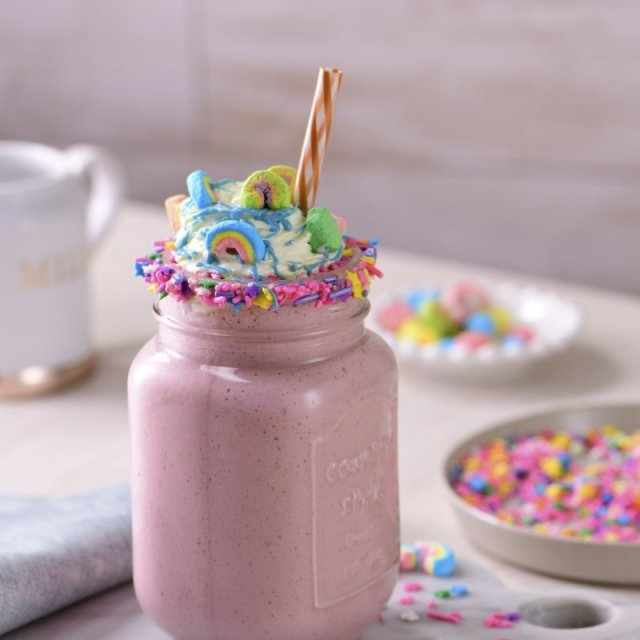
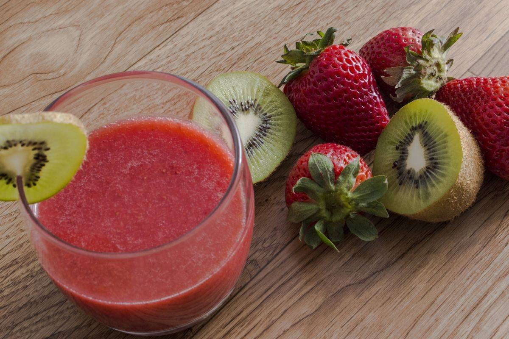
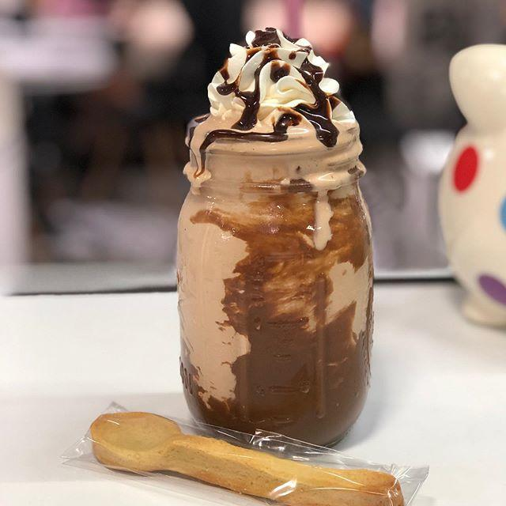

Algunas de muchas bebidas que puedes preparar
de manera fácil y rápida.
Smoothie Unicornio

Ingredientes:
1 Santa Clara® lechita sabor helado de fresa
1 lechita Santa Clara® sabor helado de vainilla
1/4 tazas de fresa
1/4 tazas de frambuesa
1/8 cucharaditas de cardamomo
1/4 cucharaditas de canela
1 cucharadita de vainilla líquida
3 bolas de helado Santa Clara® de vainilla
150 gramos de chocolate blanco, derretido
4 cucharadas de chispas de colores, en forma de estrellita, para repostería
1 taza de crema chantilly, para decorar
1/4 tazas de chocolate, azul, derretido, para decorar
al gusto de bombón chico, para decorar
Procedimiento:
Licúa las lechitas Santa Clara® sabor helado de fresa y helado de vainilla con
las fresas, las frambuesas, el cardamomo, la canela, la vainilla y el helado
Santa Clara® de vainilla, hasta obtener una mezcla homogénea. Reserva.
Escarcha los vasos con chocolate blanco derretido y estrellitas de colores. Deja secar.
Sirve la malteada cuidadosamente y decora con crema chantilly, chocolate azul y bombones.
Smoothie de fresa y kiwi

Ingredientes:
1 taza de leche de almendras (sin azúcar)
½ taza de fresas orgánicas bien lavadas
½ naranja orgánica con cáscara (sin pepitas)
1 kiwi orgánico (sin pelar bien lavado)
1 cucharada de semillas de chía
Cubos de hielo al gusto
Procedimiento:
Consigue una mezcla suave y homogénea tras batir con la batidora
(no importa el tipo, si de mano o de vaso). No tardarás mucho,
pues los ingredientes tienen gran cantidad de agua y no son duros.
Disfruta y bebe el batido en cuanto lo hagas.
Malteada de oreo y nutella

Ingredientes:
2 tazas de hielo, en cubos
1 taza de leche de vaca
1/2 tazas de nutella
1 taza de leche condensada
1 1/2 cucharaditas de vainilla líquida
4 cucharadas de jarabe de chocolate, (para la decoración)
10 galletas oreo, (para la decoración) 6 galletas sin relleno, trituradas.
4 galletas enteras para decorar. Reserva el relleno
Preparación:
Coloca en la licuadora los hielos, la leche, la nutella, la leche condensada,
la vainilla y el relleno de las galletas. Licúa bien hasta integrar todo.
Escarcha un vaso para malteada con media cucharada de jarabe de chocolate y las galletas trituradas.
Dibuja líneas a lo largo de jarabe de chocolate dentro del vaso.
Vierte la malteada dentro del vaso y decora con crema chantilly, polvo de galleta
y una galleta con nutella. Disfruta.